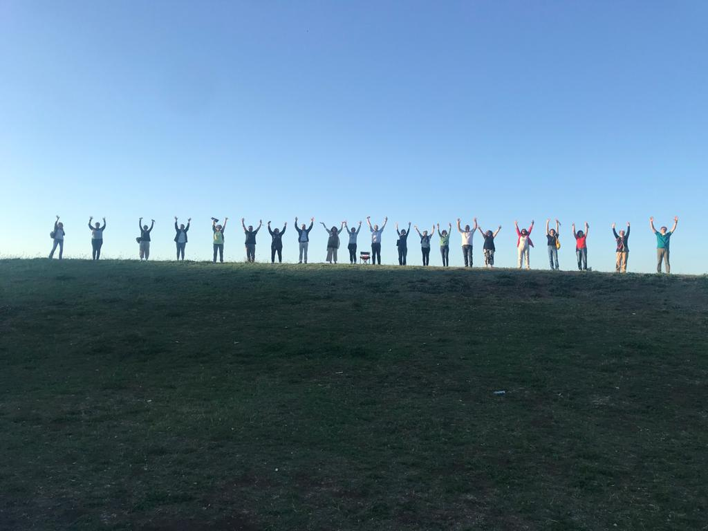

20 anni di musica, solidarietà e cultura a Prati Fiscali, Roma
20
Anni
5
Continenti
∞
Emozioni
20 anni di musica, solidarietà e cultura a Prati Fiscali, Roma

Un viaggio musicale attraverso continenti, culture e lingue
Ruota il globo e clicca sui marker per scoprire la musica di ogni continente
Canti tradizionali, polifonie tribali, ritmi ancestrali
Melodie orientali, canti spirituali, folklore
Canti popolari, folklore, tradizioni regionali
Spirituals, folk latino-americano
🎧 Sezione in arrivo - Registrazioni dai nostri concerti
Cantiamo per aiutare comunità in difficoltà in tutto il mondo
🌍 In 20 anni abbiamo supportato progetti in Africa, Asia, America Latina e Europa dell'Est
Vieni ad ascoltarci e sostieni le nostre iniziative
Non serve essere professionisti, serve solo amare il canto e voler condividere questa passione con gli altri, contribuendo a un mondo migliore.